Common Used Shortcut of Musescore
最后更新：2022.03.18, 10:59
Note Edit
augmentation dot
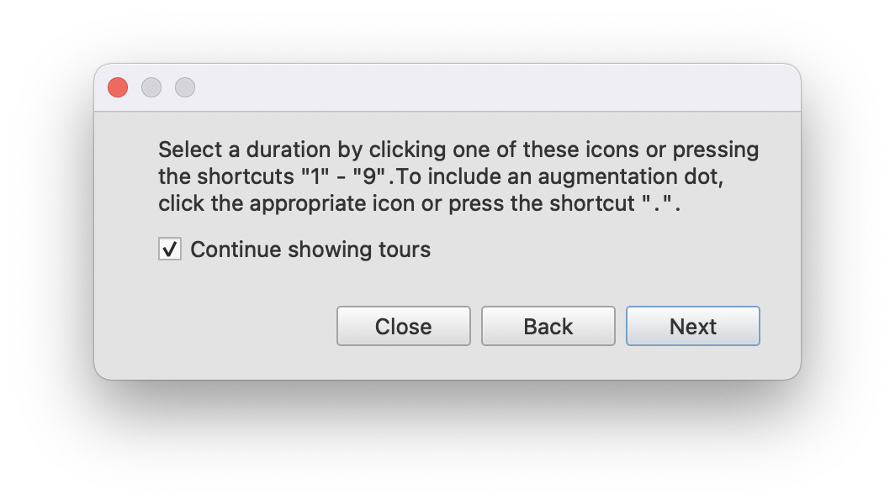
accident
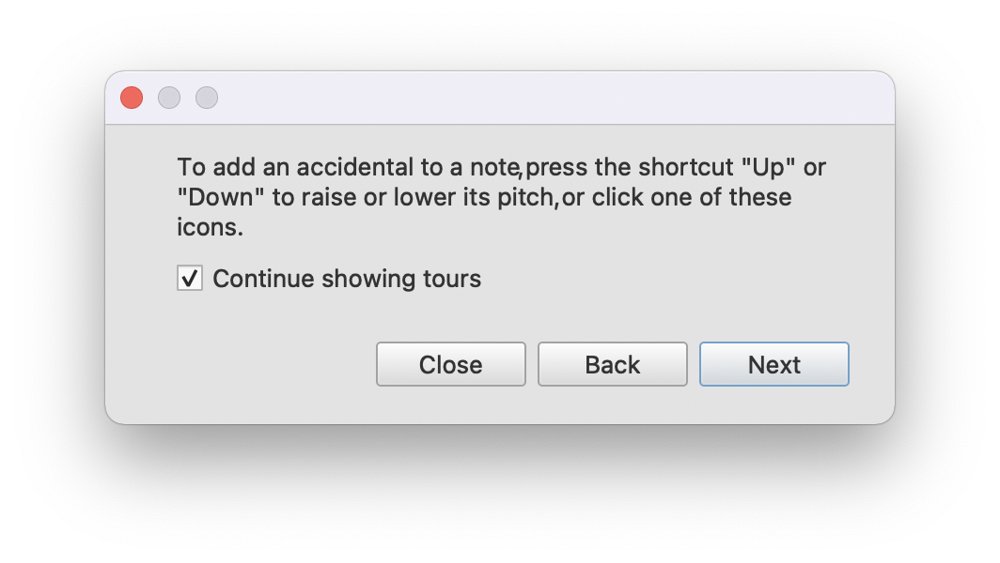
tied
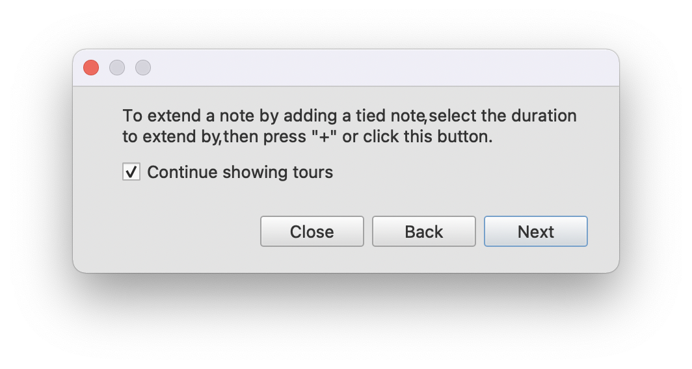
change staff without change voice part:
<cmd-S-up>,<cmd-S-down>[2]- change voices:
<cmd-M-1>,<cmd-M-2>,<cmd-M-3>,<cmd-M-4>[3] - grace: select a note and press
/to create an acciaccatura only.
Range
Basic range operation is like following
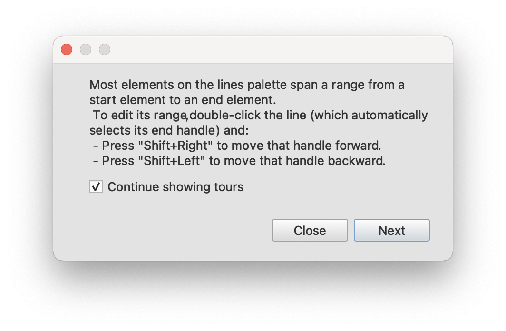
If one wish to delete a specific voice at a selected range, one can press <F6> to open Selection Filter, and just select the voice you wish to operate [6]
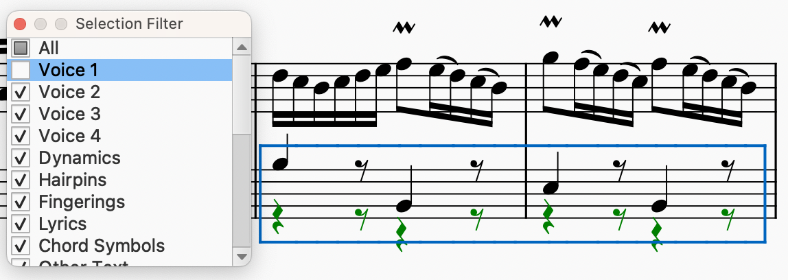
There are more advices (the last one include the trick about Selection Filter)
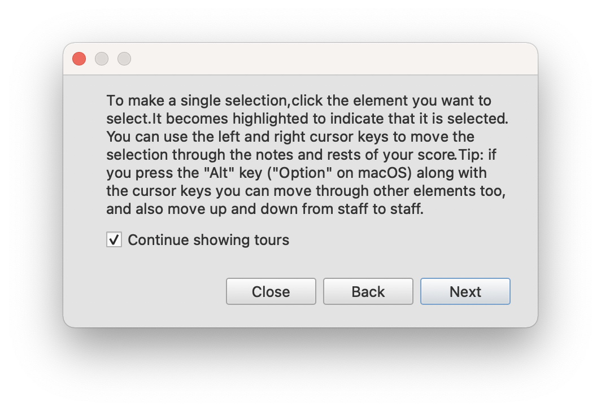
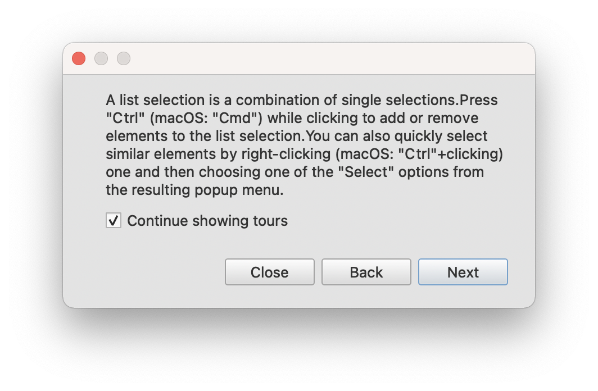
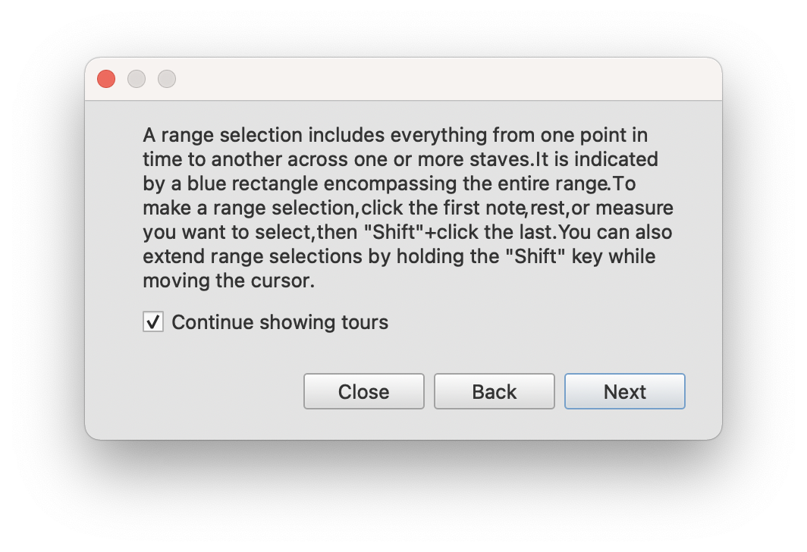
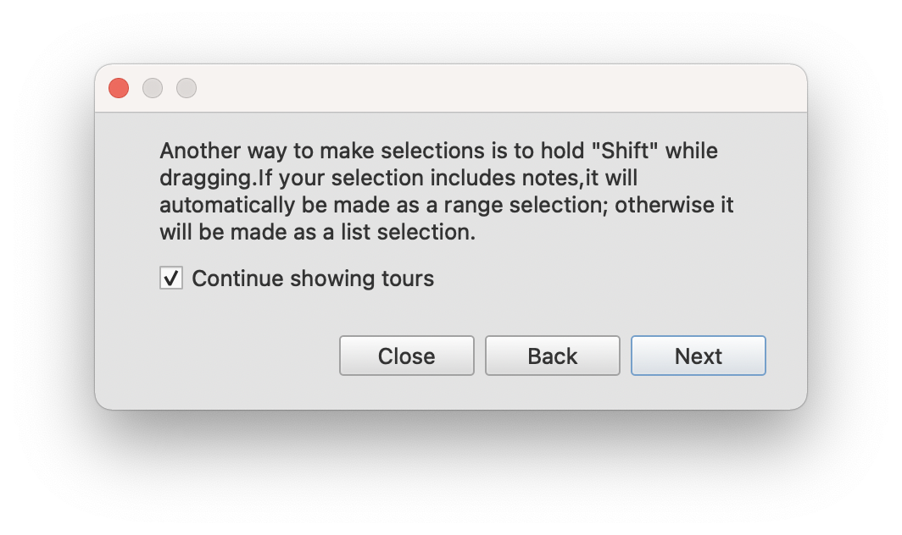
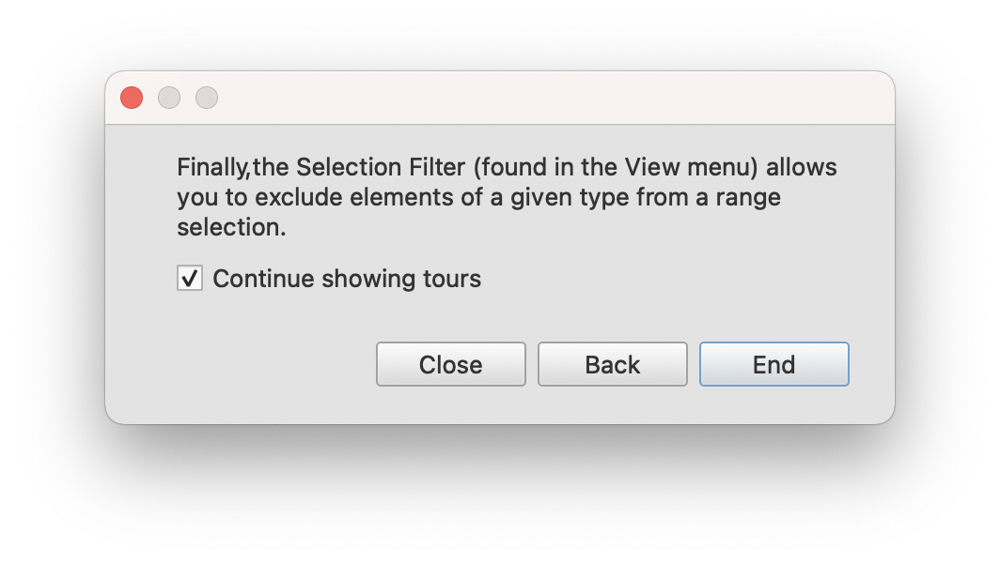
Play
- rewind to start:
musesorefor macOS doesn’t provide default forPlayer: Rewind[4] , but one can set it atPerference->Shorcutsby himself. A possible setting is<C-left>, i.e.
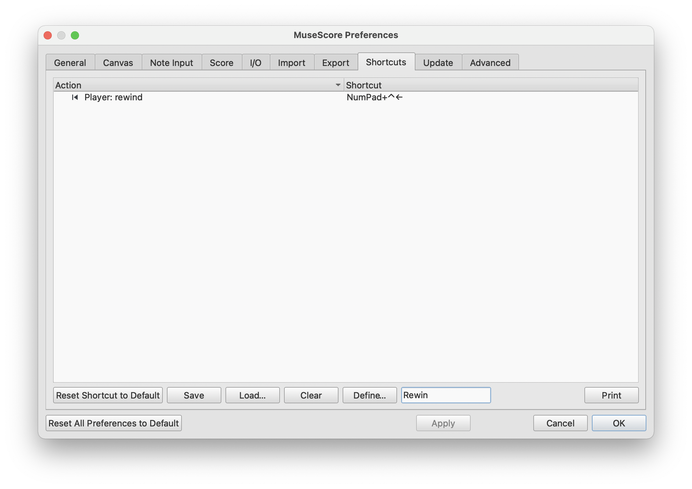
Measure
insert measure:
<S-I>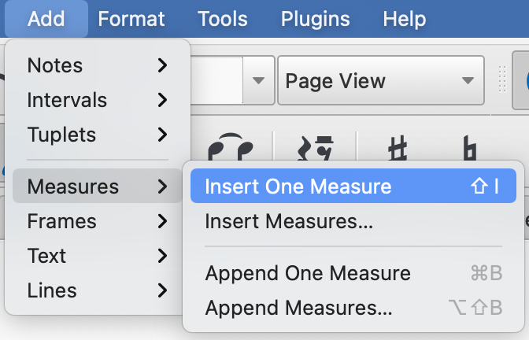
delete measure:
<cmd-fn-backspace>[1]
Rhythm
triplet
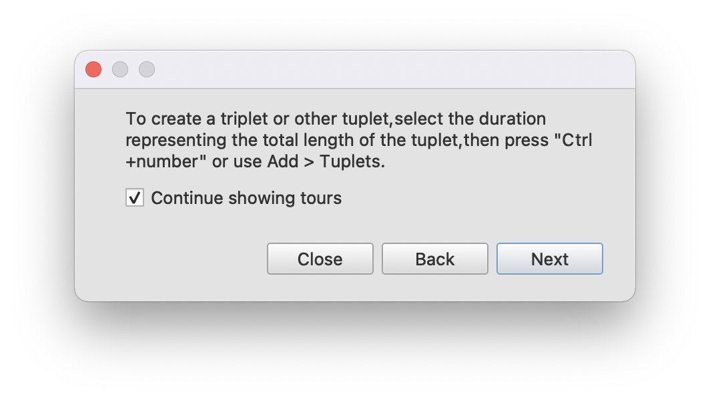
Type Setting
position of elements
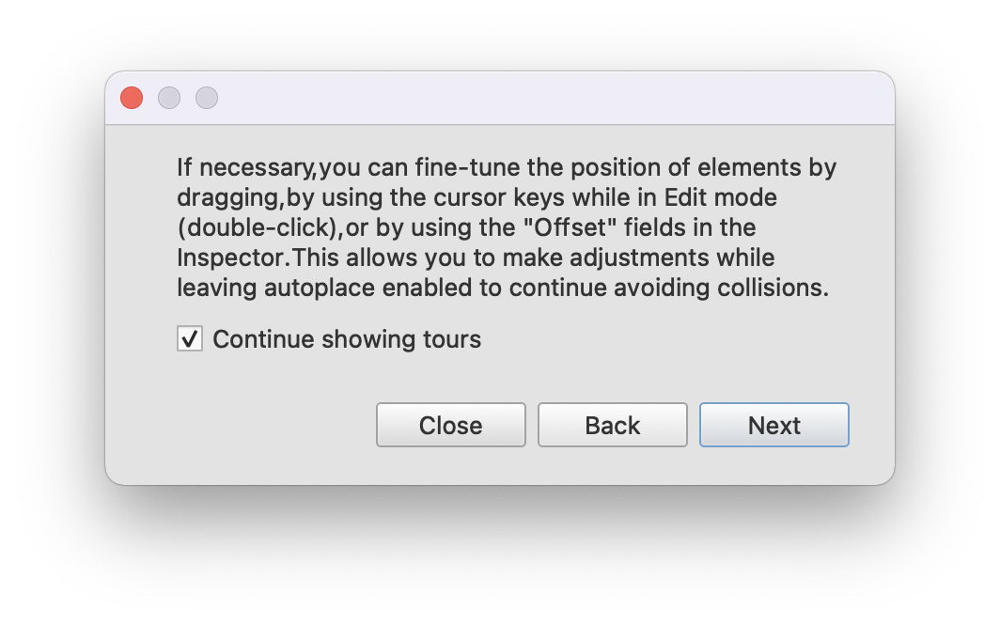
Reference
本博客所有文章除特别声明外，均采用 CC BY-NC-SA 4.0 协议 ，转载请注明出处！